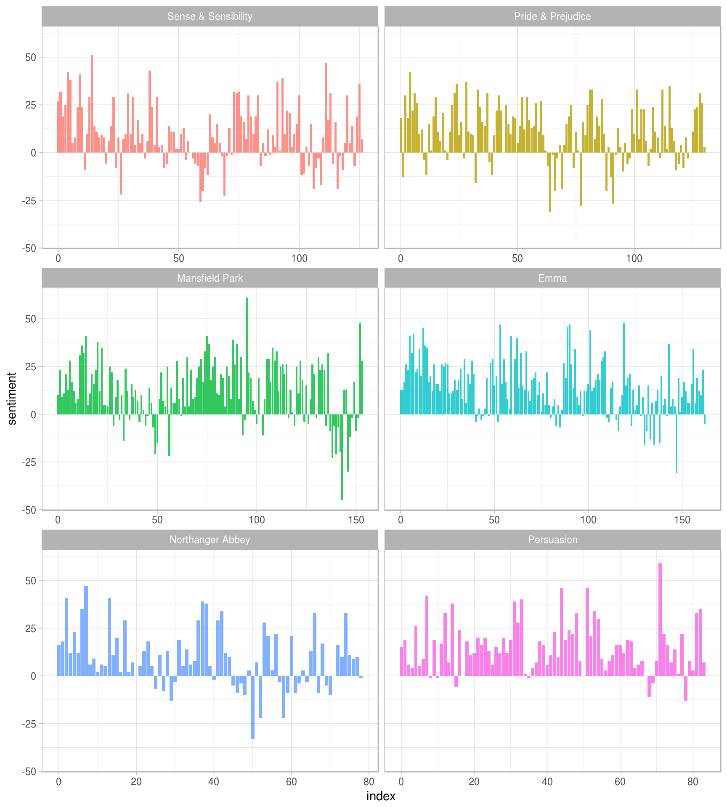
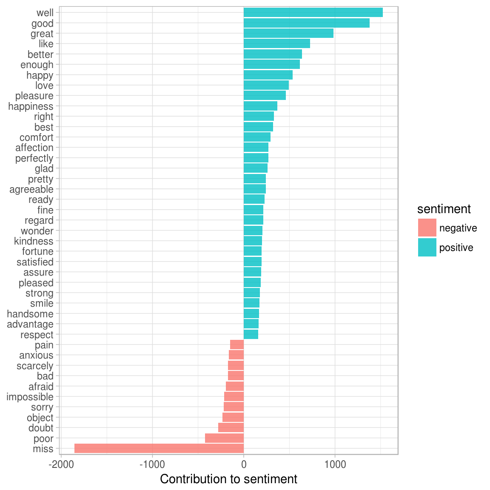
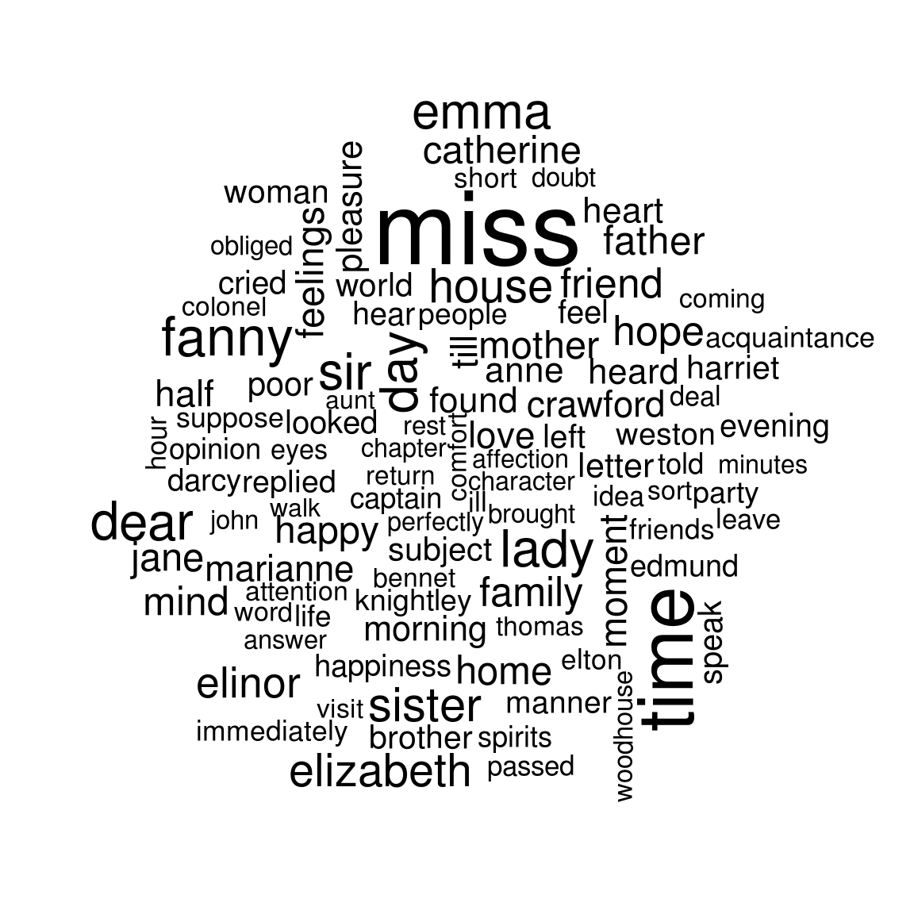
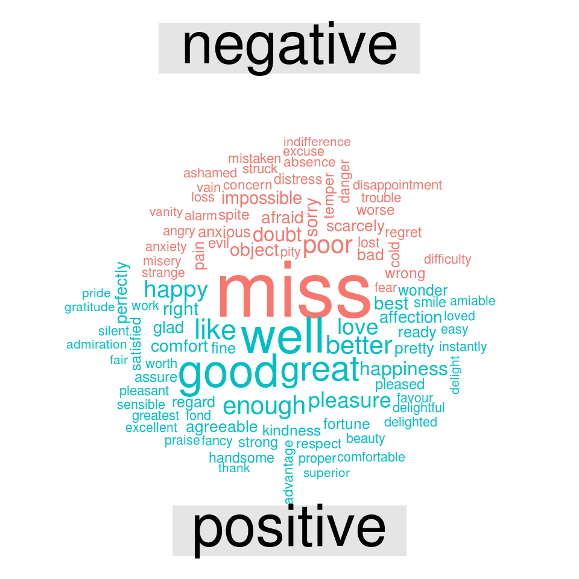

3 Sentiment analysis with tidy data
3.1 The sentiments dataset
There are a variety of methods and dictionaries that exist for evaluating the opinion or emotion in text. The tidytext package contains three sentiment lexicons in the sentiments dataset.
library(tidytext)
sentiments## # A tibble: 23,165 × 4
## word sentiment lexicon score
## <chr> <chr> <chr> <int>
## 1 abacus trust nrc NA
## 2 abandon fear nrc NA
## 3 abandon negative nrc NA
## 4 abandon sadness nrc NA
## 5 abandoned anger nrc NA
## 6 abandoned fear nrc NA
## 7 abandoned negative nrc NA
## 8 abandoned sadness nrc NA
## 9 abandonment anger nrc NA
## 10 abandonment fear nrc NA
## # ... with 23,155 more rowsThe three lexicons are
AFINNfrom Finn Årup Nielsen,bingfrom Bing Liu and collaborators, andnrcfrom Saif Mohammad and Peter Turney.
All three of these lexicons are based on unigrams (or single words). These lexicons contain many English words and the words are assigned scores for positive/negative sentiment, and also possibly emotions like joy, anger, sadness, and so forth. The nrc lexicon categorizes words in a binary fashion (“yes”/“no”) into categories of positive, negative, anger, anticipation, disgust, fear, joy, sadness, surprise, and trust. The bing lexicon categorizes words in a binary fashion into positive and negative categories. The AFINN lexicon assigns words with a score that runs between -5 and 5, with negative scores indicating negative sentiment and positive scores indicating positive sentiment. All of this information is tabulated in the sentiments dataset, and tidytext provides a function get_sentiments() to get specific sentiment lexicons without the columns that are not used in that lexicon.
get_sentiments("afinn")## # A tibble: 2,476 × 2
## word score
## <chr> <int>
## 1 abandon -2
## 2 abandoned -2
## 3 abandons -2
## 4 abducted -2
## 5 abduction -2
## 6 abductions -2
## 7 abhor -3
## 8 abhorred -3
## 9 abhorrent -3
## 10 abhors -3
## # ... with 2,466 more rowsget_sentiments("bing")## # A tibble: 6,788 × 2
## word sentiment
## <chr> <chr>
## 1 2-faced negative
## 2 2-faces negative
## 3 a+ positive
## 4 abnormal negative
## 5 abolish negative
## 6 abominable negative
## 7 abominably negative
## 8 abominate negative
## 9 abomination negative
## 10 abort negative
## # ... with 6,778 more rowsget_sentiments("nrc")## # A tibble: 13,901 × 2
## word sentiment
## <chr> <chr>
## 1 abacus trust
## 2 abandon fear
## 3 abandon negative
## 4 abandon sadness
## 5 abandoned anger
## 6 abandoned fear
## 7 abandoned negative
## 8 abandoned sadness
## 9 abandonment anger
## 10 abandonment fear
## # ... with 13,891 more rowsThese dictionary-based methods find the total sentiment of a piece of text by adding up the individual sentiment scores for each word in the text. Not every English word is in the lexicons because many English words are pretty neutral. It is important to keep in mind that these methods do not take into account qualifiers before a word, such as in “no good” or “not true”; a lexicon-based method like this is based on unigrams only. For many kinds of text (like the narrative examples below), there are not sustained sections of sarcasm or negated text, so this is not an important effect.
One last caveat is that the size of the chunk of text that we add up unigram sentiment scores for can have an important effect for an analysis. A paragraph-sized text can often have positive and negative sentiment averaged out to about zero, while sentence-sized text often works better.
3.2 Sentiment analysis with inner join
With data in a tidy format, sentiment analysis can be done as an inner join. Let’s look at the words with a joy score from the NRC lexicon. What are the most common joy words in Emma?
library(janeaustenr)
library(dplyr)
library(stringr)
tidy_books <- austen_books() %>%
group_by(book) %>%
mutate(linenumber = row_number(),
chapter = cumsum(str_detect(text, regex("^chapter [\\divxlc]",
ignore_case = TRUE)))) %>%
ungroup() %>%
unnest_tokens(word, text)nrcjoy <- get_sentiments("nrc") %>%
filter(sentiment == "joy")
tidy_books %>%
filter(book == "Emma") %>%
semi_join(nrcjoy) %>%
count(word, sort = TRUE)## # A tibble: 303 × 2
## word n
## <chr> <int>
## 1 good 359
## 2 young 192
## 3 friend 166
## 4 hope 143
## 5 happy 125
## 6 love 117
## 7 deal 92
## 8 found 92
## 9 present 89
## 10 kind 82
## # ... with 293 more rowsOr instead we could examine how sentiment changes during each novel. Let’s find a sentiment score for each word using the Bing lexicon, then count the number of positive and negative words in defined sections of each novel.
library(tidyr)
janeaustensentiment <- tidy_books %>%
inner_join(get_sentiments("bing")) %>%
count(book, index = linenumber %/% 80, sentiment) %>%
spread(sentiment, n, fill = 0) %>%
mutate(sentiment = positive - negative)Now we can plot these sentiment scores across the plot trajectory of each novel.
library(ggplot2)
ggplot(janeaustensentiment, aes(index, sentiment, fill = book)) +
geom_bar(alpha = 0.8, stat = "identity", show.legend = FALSE) +
facet_wrap(~book, ncol = 2, scales = "free_x")
We can see here how the plot of each novel changes toward more positive or negative sentiment over the trajectory of the story.
TODO: The three different methods of calculating sentiment give results that are different in an absolute sense but have similar relative trajectories through the novel.
3.3 Most common positive and negative words
One advantage of having the data frame with both sentiment and word is that we can analyze word counts that contribute to each sentiment.
bing_word_counts <- tidy_books %>%
inner_join(get_sentiments("bing")) %>%
count(word, sentiment, sort = TRUE) %>%
ungroup()
bing_word_counts## # A tibble: 2,585 × 3
## word sentiment n
## <chr> <chr> <int>
## 1 miss negative 1855
## 2 well positive 1523
## 3 good positive 1380
## 4 great positive 981
## 5 like positive 725
## 6 better positive 639
## 7 enough positive 613
## 8 happy positive 534
## 9 love positive 495
## 10 pleasure positive 462
## # ... with 2,575 more rowsThis can be shown visually, and we can pipe straight into ggplot2, if we like, because of the way we are consistently using tools built for handling tidy data frames.
bing_word_counts %>%
filter(n > 150) %>%
mutate(n = ifelse(sentiment == "negative", -n, n)) %>%
mutate(word = reorder(word, n)) %>%
ggplot(aes(word, n, fill = sentiment)) +
geom_bar(alpha = 0.8, stat = "identity") +
labs(y = "Contribution to sentiment",
x = NULL) +
coord_flip()
This lets us spot an anomaly in the sentiment analysis; the word “miss” is coded as negative but it is used as a title for young, unmarried women in Jane Austen’s works. If it were appropriate for our purposes, we could easily add “miss” to a custom stop-words list using bind_rows.
3.4 Wordclouds
We’ve seen that this tidy text mining approach works well with ggplot2, but having our data in a tidy format is useful for other plots as well.
For example, consider the wordcloud package. Let’s look at the most common words in Jane Austen’s works as a whole again.
library(wordcloud)
tidy_books %>%
anti_join(stop_words) %>%
count(word) %>%
with(wordcloud(word, n, max.words = 100))
In other functions, such as comparison.cloud, you may need to turn the data frame into a matrix with reshape2’s acast. Let’s do the sentiment analysis to tag positive and negative words using an inner join, then find the most common positive and negative words. Until the step where we need to send the data to comparison.cloud, this can all be done with joins, piping, and dplyr because our data is in tidy format.
library(reshape2)
tidy_books %>%
inner_join(get_sentiments("bing")) %>%
count(word, sentiment, sort = TRUE) %>%
acast(word ~ sentiment, value.var = "n", fill = 0) %>%
comparison.cloud(colors = c("#F8766D", "#00BFC4"),
max.words = 100)
3.5 Looking at units beyond just words
Lots of useful work can be done by tokenizing at the word level, but sometimes it is useful or necessary to look at different units of text. For example, some sentiment analysis algorithms look beyond only unigrams (i.e. single words) to try to understand the sentiment of a sentence as a whole. These algorithms try to understand that
I am not having a good day.
is a sad sentence, not a happy one, because of negation. The Stanford CoreNLP tools and the sentimentr R package (currently available on Github but not CRAN) are examples of such sentiment analysis algorithms. For these, we may want to tokenize text into sentences.
PandP_sentences <- data_frame(text = prideprejudice) %>%
unnest_tokens(sentence, text, token = "sentences")Let’s look at just one.
PandP_sentences$sentence[2]## [1] "however little known the feelings or views of such a man may be on his first entering a neighbourhood, this truth is so well fixed in the minds of the surrounding families, that he is considered the rightful property of some one or other of their daughters."The sentence tokenizing does seem to have a bit of trouble with UTF-8 encoded text, especially with sections of dialogue; it does much better with punctuation in ASCII. One possibility, if this is important, is to try using iconv(), with something like iconv(text, to = 'latin1') in a mutate statement before unnesting.
Another option in unnest_tokens is to split into tokens using a regex pattern. We could use this, for example, to split the text of Jane Austen’s novels into a data frame by chapter.
austen_chapters <- austen_books() %>%
group_by(book) %>%
unnest_tokens(chapter, text, token = "regex",
pattern = "Chapter|CHAPTER [\\dIVXLC]") %>%
ungroup()
austen_chapters %>%
group_by(book) %>%
summarise(chapters = n())## # A tibble: 6 × 2
## book chapters
## <fctr> <int>
## 1 Sense & Sensibility 51
## 2 Pride & Prejudice 62
## 3 Mansfield Park 49
## 4 Emma 56
## 5 Northanger Abbey 32
## 6 Persuasion 25We have recovered the correct number of chapters in each novel (plus an “extra” row for each novel title). In this data frame, each row corresponds to one chapter.
Near the beginning of this vignette, we used a similar regex to find where all the chapters were in Austen’s novels for a tidy data frame organized by one-word-per-row. We can use tidy text analysis to ask questions such as what are the most negative chapters in each of Jane Austen’s novels? First, let’s get the list of negative words from the Bing lexicon. Second, let’s make a dataframe of how many words are in each chapter so we can normalize for the length of chapters. Then, let’s find the number of negative words in each chapter and divide by the total words in each chapter. Which chapter has the highest proportion of negative words?
bingnegative <- get_sentiments("bing") %>%
filter(sentiment == "negative")
wordcounts <- tidy_books %>%
group_by(book, chapter) %>%
summarize(words = n())
tidy_books %>%
semi_join(bingnegative) %>%
group_by(book, chapter) %>%
summarize(negativewords = n()) %>%
left_join(wordcounts, by = c("book", "chapter")) %>%
mutate(ratio = negativewords/words) %>%
filter(chapter != 0) %>%
top_n(1) %>%
ungroup## # A tibble: 6 × 5
## book chapter negativewords words ratio
## <fctr> <int> <int> <int> <dbl>
## 1 Sense & Sensibility 43 161 3405 0.04728341
## 2 Pride & Prejudice 34 111 2104 0.05275665
## 3 Mansfield Park 46 173 3685 0.04694708
## 4 Emma 15 151 3340 0.04520958
## 5 Northanger Abbey 21 149 2982 0.04996647
## 6 Persuasion 4 62 1807 0.03431101These are the chapters with the most sad words in each book, normalized for number of words in the chapter. What is happening in these chapters? In Chapter 43 of Sense and Sensibility Marianne is seriously ill, near death, and in Chapter 34 of Pride and Prejudice Mr. Darcy proposes for the first time (so badly!). Chapter 46 of Mansfield Park is almost the end, when everyone learns of Henry’s scandalous adultery, Chapter 15 of Emma is when horrifying Mr. Elton proposes, and in Chapter 21 of Northanger Abbey Catherine is deep in her Gothic faux fantasy of murder, etc. Chapter 4 of Persuasion is when the reader gets the full flashback of Anne refusing Captain Wentworth and how sad she was and what a terrible mistake she realized it to be.